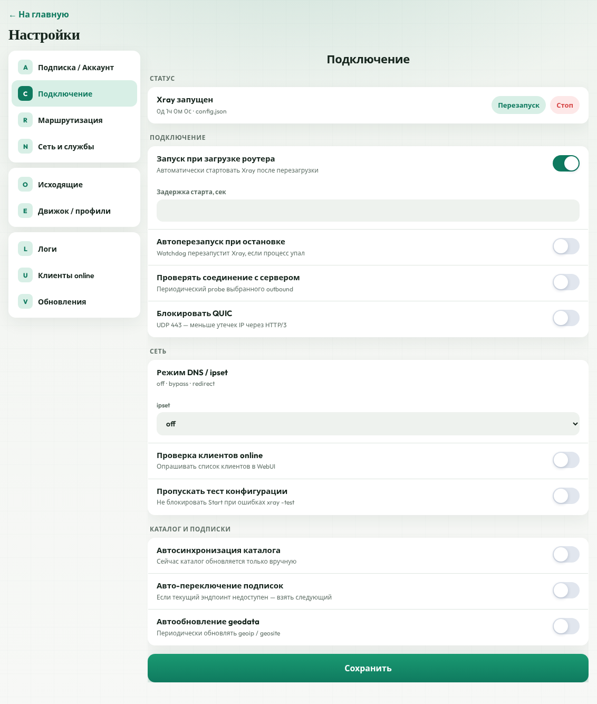
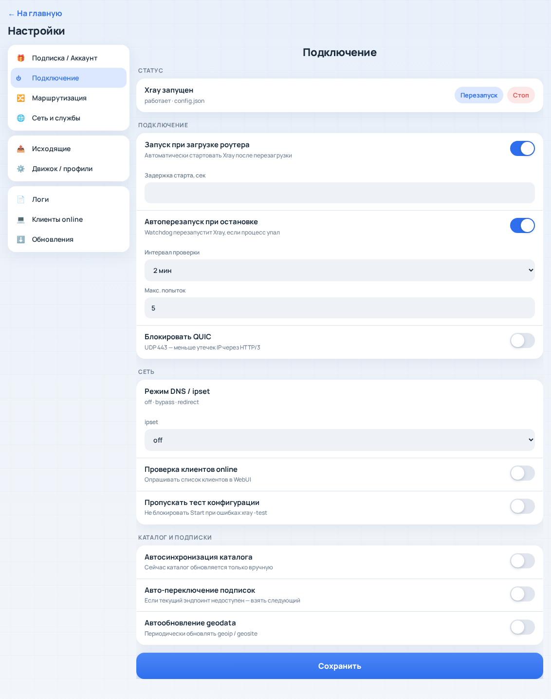
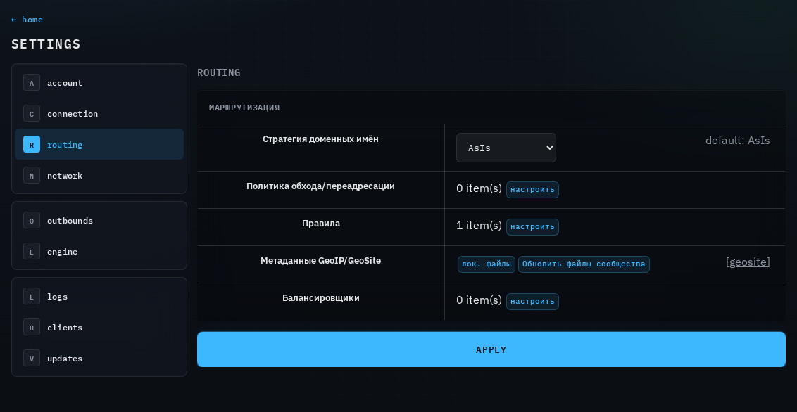
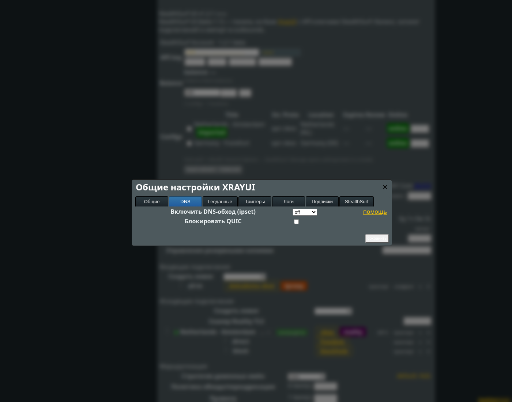
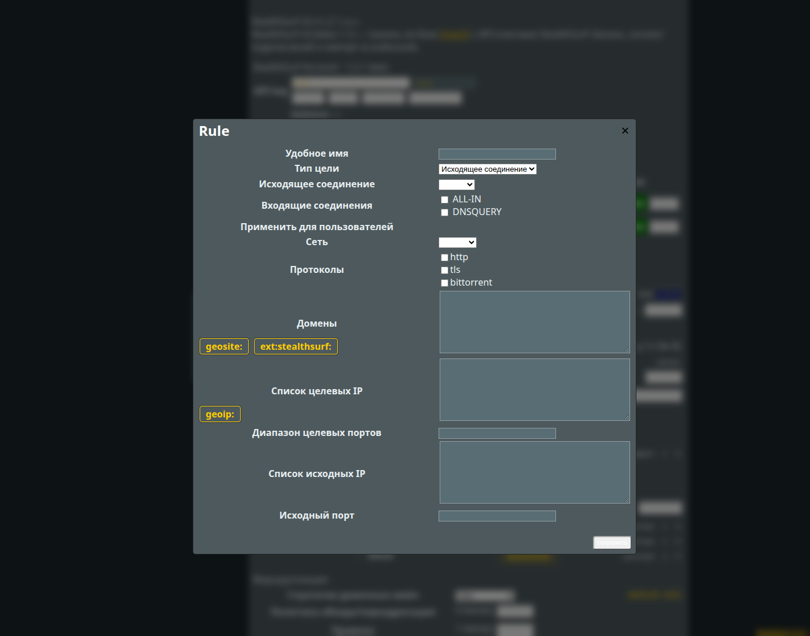
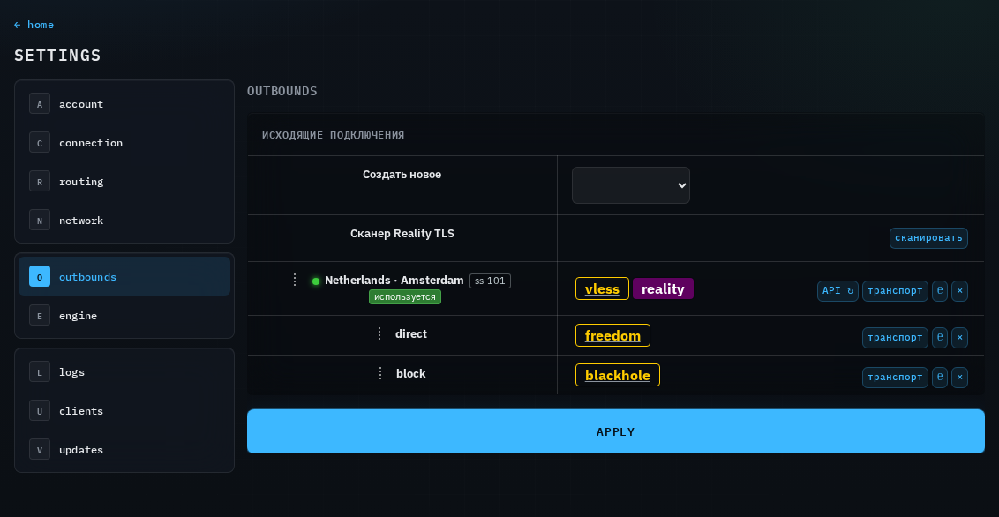
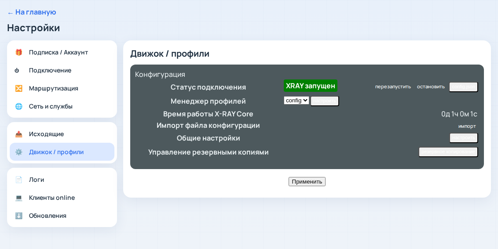
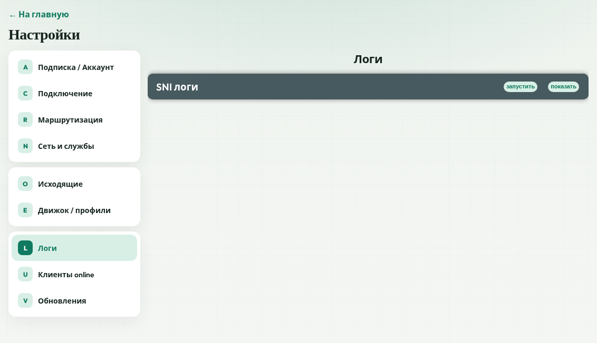
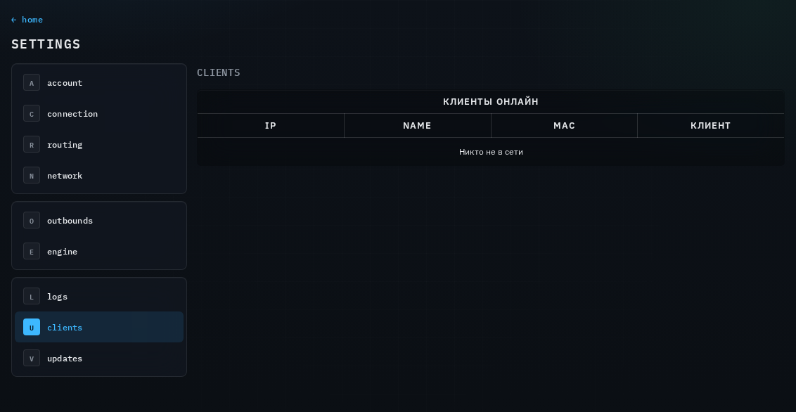
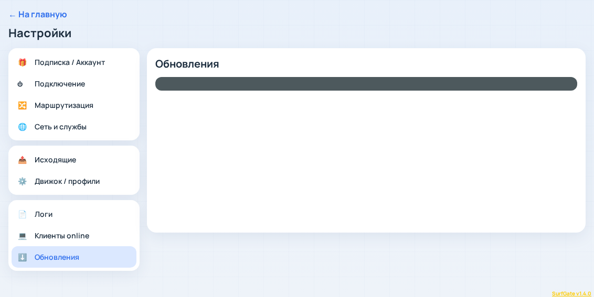

Настройки
Разделы: аккаунт · подключение · routing · сеть · исходящие · движок · логи · клиенты · обновления · справка.







ss-* узлы и статусы Observatory.



Ключевые тумблеры Connection
| Опция | Зачем |
|---|---|
| Запуск при загрузке | Автостарт Xray после ребута роутера |
| Kill-switch | Блок LAN→WAN без марки SurfGate, пока VPN «должен» быть up |
| Кому VPN | all / только MAC / все кроме MAC |
| Гостевая Wi‑Fi | follow · vpn (всегда TPROXY) · direct |
| Split bypass | Домены / geosite: → direct (минуя VPN) |
| IPv6 | proxy · block · ignore |
| DNS только через Xray | DNS leak lock на firewall |
| Тест скорости · авто | Ручной + cron 6h / 12h / 24h |
| Диагностика | Preflight · скорость · DNS / IPv6 leak · WebRTC hint |